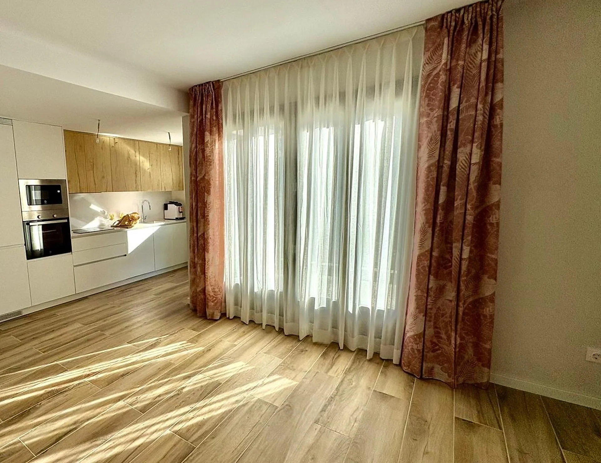
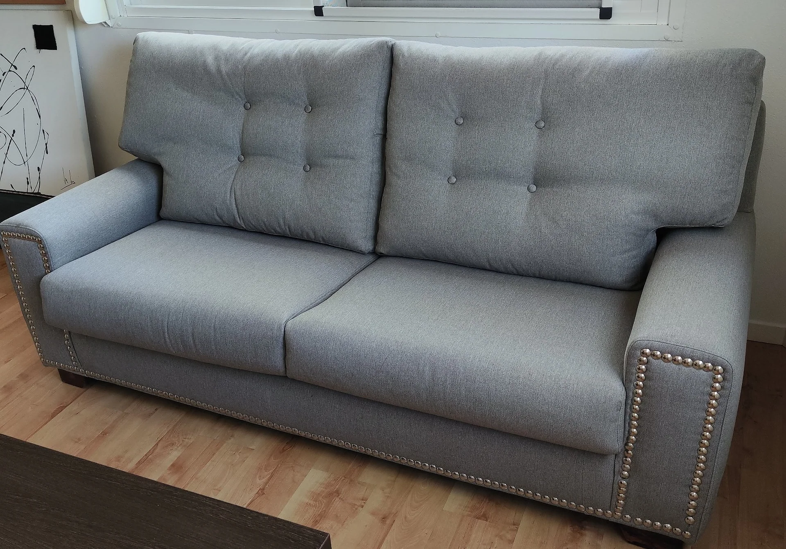
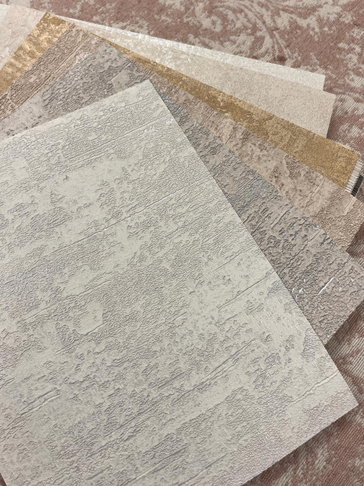
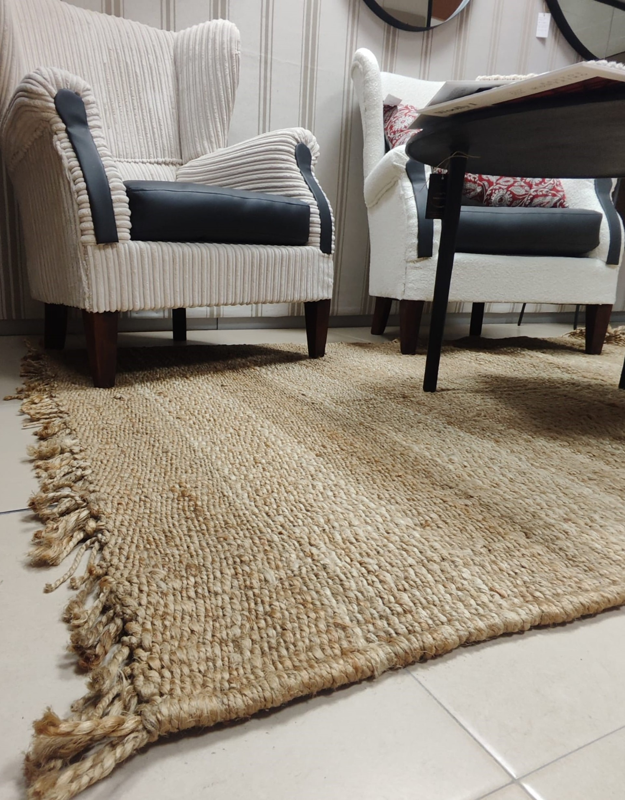

Servicios
Qué hacemos
Proyectos textiles integrales. De la idea a la instalación.
01

Cortinas y estores
Confección a medida, instalación incluida. Onda perfecta, riel motorizado, barras decorativas.
02

Tapicería
Restauración de sofás, sillas, butacas. Cambio de espuma, muelles y tejido. Como nueva.
03

Papel pintado
Instalación profesional. Catálogos exclusivos. Murales personalizados.
04

Cabeceros y textil cama
Cabeceros tapizados a medida. Colchas, edredones, cojines. Todo personalizable.
05

Alfombras
Fibras naturales, sintéticas, vinílicas. A medida o de catálogo. Instalación incluida.
06

Muebles auxiliares
Bancos, pufs, reposacabezas. Diseño propio o según tu plano. Madera y tapizado.